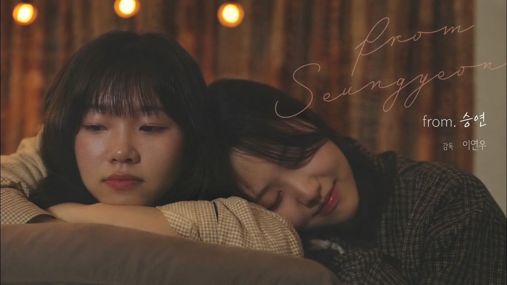
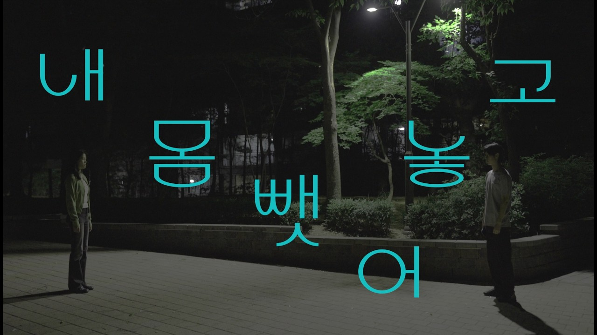

REGULAR PRODUCTION
정기영화 제작
아이디어가 시나리오로, 시나리오가 하나의 장면으로. 학기마다 함께 완성한 이야기를 정기영화로 남깁니다.


WE ARE BITSANYANG
영화를 좋아하는 마음이,
영화를 만드는 일이 되도록.
1988년부터 이어온 우리의 시선.
빛을 쫓고, 이야기를 나누고, 함께 영화를 만듭니다.
01 / OUR FILMS
2023년부터 공개된 영화와 동아리 기록입니다. 제작 연도·학기 최신순으로 정렬합니다.
공식 영상 제목·설명에서 확인된 수상 내역을 표시합니다.
다른 제목이나 연도로 찾아보세요.
02 / BEHIND THE SCENES
카메라 앞과 뒤에서,
우리는 서로의 장면을 완성합니다.
REGULAR PRODUCTION
아이디어가 시나리오로, 시나리오가 하나의 장면으로. 학기마다 함께 완성한 이야기를 정기영화로 남깁니다.
BITMURI FILM FESTIVAL
하나의 주제에서 시작하는 서로 다른 영화들. 팀별로 아이디어를 모으고 시나리오를 써서 단편영화를 제작합니다.
BEYOND THE SCREEN
촬영 현장의 순간을 메이킹으로 기록하고, 영화제 출품으로 더 많은 관객을 만납니다.
03 / OUR HISTORY
한 번의 레디, 액션이
다음 세대의 이야기로 이어집니다.
제1회 빛무리 영화제와 ‘명작 재해석’을 주제로 한 제2회 작품을 공개했습니다. 창립 35주년에는 부원들의 경험과 생각을 인터뷰로 남겼습니다.
제6회 ‘결심’, 제7회 ‘3분’ 빛무리 영화제 작품 공개. 「전구 가는 법」의 그린 이니셔티브 60초 영화제 우수상 수상 소식도 전했습니다.
공식 채널에 남겨진 기록을 바탕으로 정리했습니다.